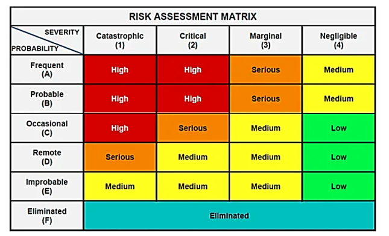
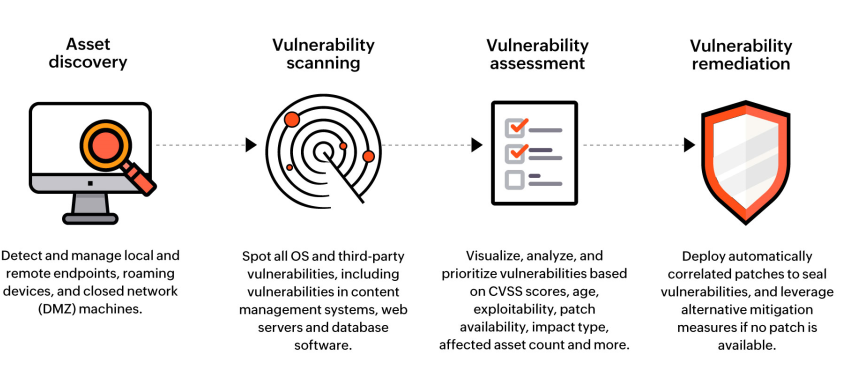
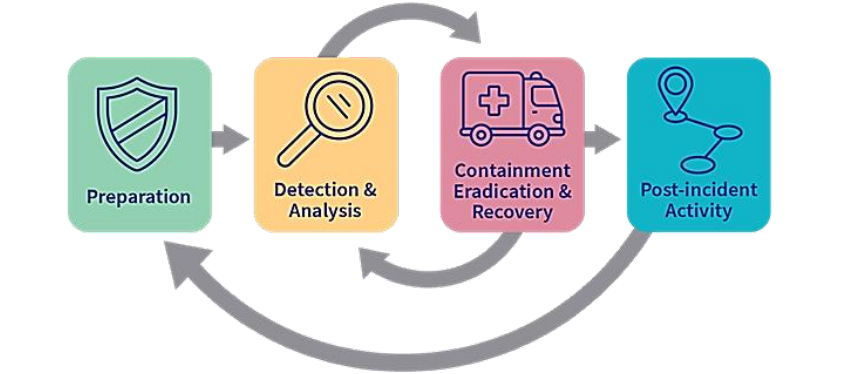
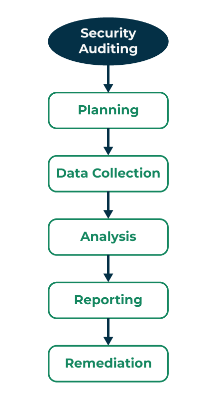

7. Security Auditing
Overview
A security audit is a broad review of policies, controls, and compliance posture—broader than a penetration test (simulated attack to find exploit paths) or a vulnerability assessment (automated scan for known flaws). Audits produce prioritized findings and remediation guidance; pentests and VA feed into audit evidence.
| Kind | Goal | Typical output |
|---|---|---|
| Audit | Controls + compliance posture | Prioritized report and recommendations |
| Pentest | Exploit paths and real-world attack simulation | PoC, entry points, attack narrative |
| Vulnerability assessment | Known flaws and misconfigurations | Scan findings, CVE lists |
7.1 Introduction
Security checking out is a method that validates the security functions and controls of an application, system, or community. It encompasses various checking out methodologies and strategies to pick out vulnerabilities, check dangers, and determine the effectiveness of safety features. Security auditing performs a critical function within the broader area of safety checking out, ensuring that structures, programs, and networks are resilient to capacity threats.
Table of Content
- What Is a Security Audit?
- How Does a Security Audit Work?
- Security Audits VS. Penetration Testing and Vulnerability Assessments
- What Is the Main Purpose of a Security Audit? Why Is It Important?
- What Does a Security Audit Consist of?
- Steps of Security Auditing Process
- Security Audit Tools and Techniques
- Best Practices for Safety Assessment
- Conclusion
- Frequently Asked Questions on What is Security Auditing in Security Testing?
What Is a Security Audit?
Security auditing is a scientific exam of an organization's information systems, policies, and methods to become aware of vulnerabilities, examine protection controls, and ensure compliance with protection standards and practices. It aims to evaluate the integrity, confidentiality, and availability of information (Topic 1 — CIA triad), as well as the general safety posture. It is also called a cybersecurity audit, which checks your organization of computer systems to make sure it is safe. It looks at things like industry standards and government rules to the if your systems meet the right security levels. This audit will check the different parts of your security controls, including the following:
- Network vulnerabilities: Weaknesses in your network's security, including access and firewall settings.
- Human dimension: How people handle sensitive information, like sharing and storing it.
- Organization's security strategy: Policies, charts, and assessments related to security.
- Physical components is a parts of your system and where it is located.
- Applications and software are Programs and updates installed by system administrators.
Security auditing is an important part of security for trying out.
While security testing measures in actively focus on the faults and threats, security auditing gives an overview of an organization's safety practices.
It compresses diverse audits to ensure that safety features are in location, up to date, and effective.
How Does a Security Audit Work?
A security audit will check if your organization to computer systems follow certain rules for keeping data safe and secured. These rules can be from company and save from like government regulations. The audit will check the company actually handles the IT security with rules. It helps to find for you need to improvement. audits will look at things like how safe your systems is, if you follow security rules, and if there are any security problems in the system. after applying the audit, you get a report with proper suggestions on how to fix any problems or error. These suggestions are stands by importance, and it up to your organization to decide which have to focus on based on your business goals for the Audits.
7.2 Scope Definition
The Scope of a Cybersecurity Audit
The scope of a cybersecurity audit typically includes:
- Strategy and Technique Audit: Assessing existing online protection approaches, systems, and administration structures to guarantee they line up with best practices and consistency necessities.
- Risk Appraisal: Distinguishing and surveying expected dangers, weaknesses, and dangers to the association's resources, including information, frameworks, and organizations
- Access Controls: Exploring access control systems, including client verification, approval cycles, and job-based admission controls, to guarantee just approved work force approach delicate data.
- Network Security: Looking at network engineering, firewall designs, interruption discovery and anticipation frameworks, and generally speaking, organization security to distinguish possible shortcomings or misconfigurations.
- Framework Security: Evaluating the security of working frameworks, applications, and equipment to guarantee they are appropriately designed and safeguarded against known weaknesses.
- Information Security: Assessing information encryption, capacity, reinforcement strategies, and information handling practices to guarantee that delicate information is satisfactorily safeguarded.
- Episode Response: Auditing the occurrence reaction plan and systems to guarantee they are compelling and modern, and surveying how past episodes were dealt with.
Planning (from Steps of Security Auditing Process)
This is where the foundation is laid. First, we define what we are going to determine and establish the purpose and scope of the audit. We set clear targets and created a plan that outlines how we're going to proceed.
What Does an Audit Cover?
The purpose of a security audit is to determine if the information systems in your company comply with internal or external standards that govern infrastructure, network, and data security. The IT rules, practices, and security controls of your business are examples of internal criteria.
Independent assessment and investigation of a system's documents and operations to ascertain the effectiveness of system controls, guarantee adherence to defined security policies and protocols, identify security service breaches, and suggest any modifications that are necessary for countermeasures.
7.3 Compliance Assessment
Configuration, vulnerability, compliance, and performance audits (plus internal/external): §7.11 Types of Security Audits and §7.12 Cybersecurity Audit.
3. Compliance Audit (from What Does a Security Audit Consist of?)
A compliance audit is a type of security audit that verifies the adherence of the system or network to the relevant security regulations, laws, and policies A compliance audit aims to ensure that the system or community meets the criminal and moral necessities and requirements imposed through the government, along with authorities groups, industry bodies, certification agencies, and so on.
Compliance Audits (Types of Security Audit in Cybersecurity)
Compliance Audits: This is the most extensive type of security audit. The objective of this audit is to evaluate an organization's compliance with internal rules and procedures which are generally less costly and time-consuming. An audit of a national bank is an example of a compliance audit. Government rules would require an audit of the bank to ensure that it complied with industry standards for financial transactions, privacy, and other matters. This audit contributes to confirming the bank's moral and legal operations.
Compliance (from What Is the Main Purpose of a Security Audit?)
Many industries require compliance with particular security requirements and regulations. Auditing guarantees that agencies meet those necessities.
How Prepared is Your Organization against Cybersecurity Risks? — Security Arrangements
Security Arrangements: Do you have far-reaching network safety strategies and methodologies set up, including access controls, information assurance, and episode reaction plans?
Review relevant compliance standards (Best Practices for Cyber Security Auditing)
Review relevant compliance standards: You must abide by certain rules that will tell you how to do this, even if all you are doing is gathering names and email addresses for your newsletter or tracking user behavior using browser cookies.
7.4 Risk Assessment
Risk Assessment Audits (Types of Security Audit in Cybersecurity)
Risk Assessment Audits: Information security audits also include risk evaluations. The primary intention of risk assessments is to detect possible hazards and evaluate the probability of such dangers becoming actual. To detect and evaluate the risks of significant misstatement, whether as a result of fraud or mistake, we carry out risk assessment methods to get a knowledge of the entity and its environment, including the firm's controls.
What Is the Main Purpose of a Security Audit? — Risk Mitigation
Risk Mitigation: Auditing enables the identification of vulnerabilities and weaknesses in security controls, permitting agencies to proactively cope with capability risks.
A security audit helps to find out where your organization's security is weak and is there will meets your standards or not. It is like a map showing what needs to be fix and what is okay. Security audits are really important for making the plans to manage risks and keep measure the data safe.
How Prepared is Your Organization against Cybersecurity Risks? — Risk Evaluation
Risk Evaluation: Have you conducted an exhaustive risk evaluation to distinguish expected shortcomings and dangers?

Locate the cell where probability (rows A–F) meets severity (columns 1–4). Higher combined ratings (e.g. High, Serious) mean fix first. Auditors map findings to this grid so remediation order is defensible to management.
7.5 Security Control Evaluation
Functions of Cybersecurity Audit
Below are some functions of a security audit in cybersecurity
Security controls: This part of the audit checks to see how well a business's security controls work.
Encryption: This audit section confirms that a company has procedures in place to oversee data encryption procedures.
Communication controls: Auditors make sure that communication controls work on both the client and server sides, as well as the network that links them.
Network vulnerabilities: To gain access to data or system, these are flaws in any part of the network that an hacker can use to hack.
During a security audit (from Security Audits VS. Penetration Testing)
During a security audit, which they check a lot of things like how strong your firewall is, if you have good antivirus protection, from your which is password rules, how you protect data from any other risks, who can access what, how you check the users, and how you manage changes in a system. It is not just about finding problems in other side it is also about how well your organization handles security in the systems, which is really important for a good security plan.
Components of Security Audit in Cybersecurity
Below are some components of a security audit in cybersecurity
Data security: Data security includes network access restrictions, data encryption, and how sensitive information travels within the organization.
Physical security: Physical security includes the building where the organization is located as well as the actual equipment that is utilized to hold private data.
Network security: This includes antivirus setups, network monitoring, and network restrictions. Layered network controls and segmentation: Topic 3 — protection models.
Operational security: This creates information security policies, processes, and controls audits.
7.6 Vulnerability Assessment
Full GfG treatment of the vulnerability audit type: §7.11 (§2 Vulnerability Audit).
2. Vulnerability Audit (from What Does a Security Audit Consist of?)
A vulnerability audit is a sort of protection audit that identifies and evaluates the potential weaknesses and flaws in the gadget or network that could be exploited by attackers. A vulnerability audit uses various gear and techniques, which include scanners, penetration trying out, code evaluation, and so on., to find out and check the vulnerabilities. A vulnerability audit additionally provides hints for mitigating or getting rid of the vulnerabilities.
Penetration Audits (Types of Security Audit in Cybersecurity)
Penetration Audits: Penetration testing, is intended to actual attacks and find weaknesses that may be used in contrast to compliance audits. To find possible avenues of entry for hackers, it evaluates how well an organization's security measures such as firewalls, intrusion detection systems, and access controls are working.

1. Vulnerability Scanners (from Security Audit Tools and Techniques)
Think of these as our computerized detectives. They scan networks and programs to discover vulnerabilities. It's like sending out virtual inspectors to discover weak spots that would be exploited.
2. Penetration Testing (from Security Audit Tools and Techniques)
This is where we get a bit greater arms-on. We simulate cyberattacks to see how well our safety defenses preserve up. It's like staging a ridicule burglary to look where the weaknesses are in our safety system.
7.7 Incident Response Evaluation
Incident Response (from What Is the Main Purpose of a Security Audit?)
Incident Response: In the event of a security incident, audits provide a treasured reference factor for investigation and healing.
How Prepared is Your Organization against Cybersecurity Risks? — Occurrence Response Plan
Occurrence Response Plan: Do you have a legitimate episode reaction plan that moves toward take in the event of a security break?

7.8 Documentation Review
GfG labels the step below as “Data Collection,” but the paragraph describes evaluation and prioritization (analysis-style work). Use the five-step diagram in §7.9 as the canonical map: Planning → Data Collection → Analysis → Reporting → Remediation.
2. Data Collection (from Steps of Security Auditing Process)
With the statistics in hand, we dive into an intensive evaluation. We're seeking out weaknesses, vulnerabilities, and regions wherein security won't be up to par. For each problem, we determine the ability dangers and prioritize them based totally on their potential effect and likelihood.
3. Analysis (from Steps of Security Auditing Process)
Once we've assessed the whole thing, we put together a detailed audit file. This is where we summarize our findings, outlining the recognized vulnerabilities and weaknesses. We do not simply highlight the troubles; we additionally provide realistic guidelines for improvement, and we return our findings with proof and helpful documentation.
Documentation (from Best Practices for Safety Assessment)
Just like preserving a magazine of your experiences, retaining accurate facts about your audit findings is crucial. Document what you find out, the movements you take, and the development made. This ensures you have a clear record of your protection adventure.
Create a list of security personnel and their responsibilities (Best Practices for Cyber Security Auditing)
Create a list of security personnel and their responsibilities: To get knowledge of infrastructure and the protection in place to secure your sensitive data, auditors may need to speak with members of your security team and data owners.
Review your information security policy (Best Practices for Cyber Security Auditing)
Review your information security policy: A policy on information security establishes guidelines for managing sensitive information that belongs to both clients and staff, in determining the level of sensitivity of certain assets and the adequacy of the procedures in place to protect them.
7.9 Reporting and Recommendation
4. Reporting (from Steps of Security Auditing Process)
Once we've got assessed the whole lot, we prepare an in-depth audit document. This is wherein we summarize our findings, outlining the recognized vulnerabilities and weaknesses. We do not simply spotlight the problems; we also offer sensible pointers for improvement, and we again our findings with evidence and assisting documentation.
5. Remediation (from Steps of Security Auditing Process)
The very last degree is all about motion. We work carefully with the organization to implement the vital changes and enhancements that we've advocated in the audit document. This frequently means addressing the maximum crucial troubles first and setting a clear timeline for completing the essential modifications.

Steps of Security Auditing Process
The security audit process generally consists of the following steps:
7.10 Security Audits VS. Penetration Testing and Vulnerability Assessments
Summary table: Overview — audit vs pentest vs VA. Intro distinction: §7.1 (testing vs auditing).
- Audit — wide control and policy review; report with prioritized fixes.
- Pentest — ethical attack simulation; proves exploitability.
- Vulnerability assessment — scan for known issues; does not replace audit breadth.
A security audit is like a large check for your System safety from future fail. It is more than just trying to break into your system which is penetration testing or looking for known issues in which vulnerability assessments. In Penetration testing involves ethical hackers which are to find weaknesses in your system by checking it. Vulnerability assessments scan will check your system for known your problems. In these doing these regularly helps to keep your system secure.
During a security audit, which they check a lot of things like how strong your firewall is, if you have good antivirus protection, from your which is password rules, how you protect data from any other risks, who can access what, how you check the users, and how you manage changes in a system. It is not just about finding problems in other side it is also about how well your organization handles security in the systems, which is really important for a good security plan.
7.11 Types of Security Audits
Different types of security auditing can be performed depending on the focus area, the level of detail, and the approach used by the auditor.
Some common types of security auditing are:
1. Configuration Audit
A configuration audit is a kind of protection audit that verifies the settings and parameters of the gadget or community components, consisting of hardware, software, firewalls, routers, switches, servers, and so on. A configuration audit goal is to make certain that the configuration of the system or network is regular, steady, and compliant with the proper practices and requirements.
2. Vulnerability Audit
A vulnerability audit is a sort of protection audit that identifies and evaluates the potential weaknesses and flaws in the gadget or network that could be exploited by attackers. A vulnerability audit uses various gear and techniques, which include scanners, penetration trying out, code evaluation, and so on., to find out and check the vulnerabilities. A vulnerability audit additionally provides hints for mitigating or getting rid of the vulnerabilities.
3. Compliance Audit
A compliance audit is a type of security audit that verifies the adherence of the system or network to the relevant security regulations, laws, and policies A compliance audit aims to ensure that the system or community meets the criminal and moral necessities and requirements imposed through the government, along with authorities groups, industry bodies, certification agencies, and so on.
4. Performance Audit
A performance audit is a sort of safety audit that measures and evaluates the efficiency and effectiveness of the safety controls and processes applied with the aid of the system or community.
Types of Security Audit in Cybersecurity — Internal Audits
Internal Audits
In these audits, a business uses its tools and internal audit department. These are often carried out to find opportunities for development and guarantee the security of the company's assets. When a company needs to make sure that its business processes are following policies and procedures, it utilizes internal audits. A goal is to evaluate how well an organization's internal controls, processes, and procedures are working to verify that they conform with industry standards and laws.
Types of Security Audit in Cybersecurity — External Audits
External Audits
In external audits, an outside group is transferred to complete an audit. A company also creates an external audit to make sure of industry standards or government rules. The frequency of these audits is usually lower than that of internal audits, once a year. In addition to doing their investigations and research to make sure the company complies with industry standards, external auditors depend on the data supplied by the internal audit team of the company to complete their review.
Types of cybersecurity audits used by both external and internal audit teams include the following:
Compliance Audits: This is the most extensive type of security audit. The objective of this audit is to evaluate an organization's compliance with internal rules and procedures which are generally less costly and time-consuming. An audit of a national bank is an example of a compliance audit. Government rules would require an audit of the bank to ensure that it complied with industry standards for financial transactions, privacy, and other matters. This audit contributes to confirming the bank's moral and legal operations.
Penetration Audits: Penetration testing, is intended to actual attacks and find weaknesses that may be used in contrast to compliance audits. To find possible avenues of entry for hackers, it evaluates how well an organization's security measures such as firewalls, intrusion detection systems, and access controls are working.
Risk Assessment Audits: Information security audits also include risk evaluations. The primary intention of risk assessments is to detect possible hazards and evaluate the probability of such dangers becoming actual. To detect and evaluate the risks of significant misstatement, whether as a result of fraud or mistake, we carry out risk assessment methods to get a knowledge of the entity and its environment, including the firm's controls.
7.12 Cybersecurity Audit
Policy and compliance checklist items also appear under §7.3 Compliance Assessment.
What is a Cyber Security Audit?
Security audits in cybersecurity using a range of technologies, procedures, and controls determine the protection of an organization's networks, programs, devices, and data against risks and threats They are done regularly, and the findings are compared to established internal baselines, industry standards, and cybersecurity best practices.
Internal IT and security teams, as well as external, third-party businesses, undertake these audits. The auditor evaluates the organization's compliance status and a complicated web of obligations arises from an organization's potential compliance with many information security and data privacy regulations, depending on its particular nature.
What is a Cybersecurity Audit?
Security audit in cybersecurity of IT systems is an extensive examination and assessment It highlights weak points and high-risk behaviors to identify vulnerabilities and threats. IT security audits have the following notable advantages, Evaluation of risks and identification of vulnerabilities. In addition to evaluating the organization's capacity to comply with applicable data privacy requirements, the auditor will examine every aspect of the security posture to identify any weaknesses. Internal IT and security teams, as well as external, third-party businesses, undertake these audits. A comprehensive evaluation provides the business with a clear picture of its systems and valuable information on how to effectively address risks. It should be a qualified third party who does the audit. The evaluation's findings confirm that the organization's defenses are strong enough for management, suppliers, and other interested parties.
How Prepared is Your Organization against Cybersecurity Risks?
Here's a checklist to gauge preparedness:
- Risk Evaluation: Have you conducted an exhaustive risk evaluation to distinguish expected shortcomings and dangers?
- Security Arrangements: Do you have far-reaching network safety strategies and methodologies set up, including access controls, information assurance, and episode reaction plans?
- Worker preparation: Are your representatives routinely prepared on network protection best practices, for example, perceiving phishing endeavors and dealing with delicate data?
- Occurrence Response Plan: Do you have a legitimate episode reaction plan that moves toward take in the event of a security break?
- Normal Updates: Are your products, equipment, and frameworks routinely refreshed and fixed to safeguard against known shortcomings?
- Reinforcement Methodology: Do you have standard information reinforcements and a recuperation plan to guarantee business congruity if there should be an occurrence of an assault?
Importance of Cybersecurity Audit
Below are some important security audits in cybersecurity
- Cyber security threats come up daily, as an effect of the regular evolution of digital technology.
- Handling sensitive data improperly results in fines, legal action, and damage to one's reputation.
- Frequent cybersecurity audits uncover any gaps in defense and protection strategies, enabling security teams to put in place the necessary mitigation controls and give risk repair priority.
- When an organization's cybersecurity protocols don't meet industry standards, a data breach or other major security incident is more likely to appear.
7.13 Internal vs External Cybersecurity Audit
Internal — frequent, cheaper, knows the environment; may lack objectivity. External — independent, standards-focused, often annual; higher cost, stronger third-party assurance. Many programs run both.
| Aspect | Internal Cybersecurity Audit | External Cybersecurity Audit |
|---|---|---|
| Definition | Conducted by in-house staff or team | Conducted by third-party firms or independent consultants |
| Scope | Focuses on internal processes and controls | Focuses on compliance with industry standards and best practices |
| Cost | Typically lower as it involves internal resources | Generally higher due to fees for third-party consultants |
| Perspective | Familiar with internal systems and organizational culture | Provides an unbiased, fresh perspective |
| Objectivity | May be less objective due to familiarity with internal practices | More objective and independent, less influenced by internal politics |
| Frequency | Can be more frequent and regular | Typically done on a less frequent basis, like annually or biannually |
| Expertise | May vary depending on the skills of internal staff | Often high due to specialized knowledge of the consulting firm |
7.14 Security Audit Tools and Techniques
A sort of equipment and techniques may be used at some stage in protection auditing:
1. Vulnerability Scanners
Think of these as our computerized detectives. They scan networks and programs to discover vulnerabilities. It's like sending out virtual inspectors to discover weak spots that would be exploited.
2. Penetration Testing
This is where we get a bit greater arms-on. We simulate cyberattacks to see how well our safety defenses preserve up. It's like staging a ridicule burglary to look where the weaknesses are in our safety system.
3. Log Analysis
This is similar to sifting via a trail of breadcrumbs. We overview device logs to identify something unusual or suspicious. It's a piece like going through a detective's pocketbook to locate clues.
4. Code Review
Imagine it as examining the blueprints of a building. We examine the supply code of packages to discover protection problems. It's like checking the layout for any hidden trapdoors or susceptible foundations.
5. Policy and Compliance Checks
Think of this as ensuring all and sundry follows the regulations. We ensure that the corporation complies with its very own security policies and enterprise regulations. It's like making sure anybody in a recreation is gambling using the same set of regulations.
7.15 Best Practices for Safety Assessment
Best Practices for Safety Assessment
Consider these best practices for an effective security audit:
- Regular audits: It's like going for everyday checks U.S.A. with your doctor. Perform audits constantly. This allows you to be proactive in identifying and addressing new safety threats that might pop up at any time.
- Documentation: Just like preserving a magazine of your experiences, retaining accurate facts about your audit findings is crucial. Document what you find out, the movements you take, and the development made. This ensures you have a clear record of your protection journey.
- Training: Think of your audit team as athletes in schooling. Ensure your audit groups are nicely prepared and up to date with contemporary safety practices and technologies. It's like giving them the right gear and capabilities to tackle any challenges that come their way.
- Continuous Improvement: Imagine your security audit process as a satisfactory-tuned machine. Use your study's findings to make continuous enhancements to your protection processes. It's all approximately studying from your experiences and getting better at what you do.
Best Practices for Cyber Security Auditing
- Review your information security policy: A policy on information security establishes guidelines for managing sensitive information that belongs to both clients and staff, in determining the level of sensitivity of certain assets and the adequacy of the procedures in place to protect them.
- Detail your network structure: Giving auditors access to a network diagram may improve their comprehension of your system. You may provide logical and physical network diagrams, which are of two different kinds.
- Review relevant compliance standards: You must abide by certain rules that will tell you how to do this, even if all you are doing is gathering names and email addresses for your newsletter or tracking user behavior using browser cookies.
- Create a list of security personnel and their responsibilities: To get knowledge of infrastructure and the protection in place to secure your sensitive data, auditors may need to speak with members of your security team and data owners.
7.16 Benefits and Drawbacks of Cybersecurity Audit
What Is the Main Purpose of a Security Audit? Why Is It Important?
A security audit helps to find out where your organization's security is weak and is there will meets your standards or not. It is like a map showing what needs to be fix and what is okay. Security audits are really important for making the plans to manage risks and keep measure the data safe.
The significance of safety auditing can't be overstated:
- Risk Mitigation: Auditing enables the identification of vulnerabilities and weaknesses in security controls, permitting agencies to proactively cope with capability risks.
- Compliance: Many industries require compliance with particular security requirements and regulations. Auditing guarantees that agencies meet those necessities.
- Data Protection: Protecting sensitive information is important. Auditing facilitates identifying gaps in statistics safety measures.
- Incident Response: In the event of a security incident, audits provide a treasured reference factor for investigation and healing.
- Trust Building: Demonstrating a commitment to protection through everyday auditing builds agreement with customers, companions, and stakeholders.
Benefits of Cybersecurity Audit
Below are some benefits of security audit in cybersecurity
- A comprehensive evaluation provides the business with a clear picture of its systems and ideas on how to effectively manage risks.
- The chance of a data breach and its consequences is reduced in the security audits in cybersecurity.
- Regulators are unlikely to impose substantial fines on an organization if it can show that it took the necessary precautions to handle data protection.
- People who work with and buy from the company are less likely to trust it if there is a security problem, especially if it is preventable.
Drawbacks of Cybersecurity Audit
Below are some drawbacks of security audits in cybersecurity
- The most important one is that you never know what you don't know. If you don't have extensive experience auditing across frameworks and companies, your perspective is constrained.
- A lot of resources are needed to conduct security audits, including staff, money, and also time.
- Security audits sometimes ignore other possible vulnerabilities in favor of concentrating on particular sections or components of security. This narrow focus might give rise to a false sense of security if important details are missed.
- Due to their high level of technological complexity, effective performance of cybersecurity audits necessitates specialized knowledge and experience.
Conclusion
Security auditing plays a critical function within the broader area of safety checking out, ensuring that structures, programs, and networks are resilient to capacity threats.
- Security audit = broad check of controls and practices; pentest = simulated attack; vulnerability assessment = scan for known flaws.
- Five process steps: Planning → Data Collection → Analysis → Reporting → Remediation.
- Risk matrix maps probability × severity to prioritize findings.
- Vulnerability lifecycle: discover → scan → assess → remediate.
- Incident response: Preparation → Detection → Containment/Recovery → Post-incident lessons.
- Internal audits (frequent, in-house) vs external audits (independent, often annual).
- Compliance, configuration, vulnerability, and performance audits serve different audit goals.
- Five-step audit process: Planning → Data Collection → Analysis → Reporting → Remediation (see §7.9 diagram).
- Audit-type mnemonic: CoV-CoP — Configuration, Vulnerability, Compliance, Performance.